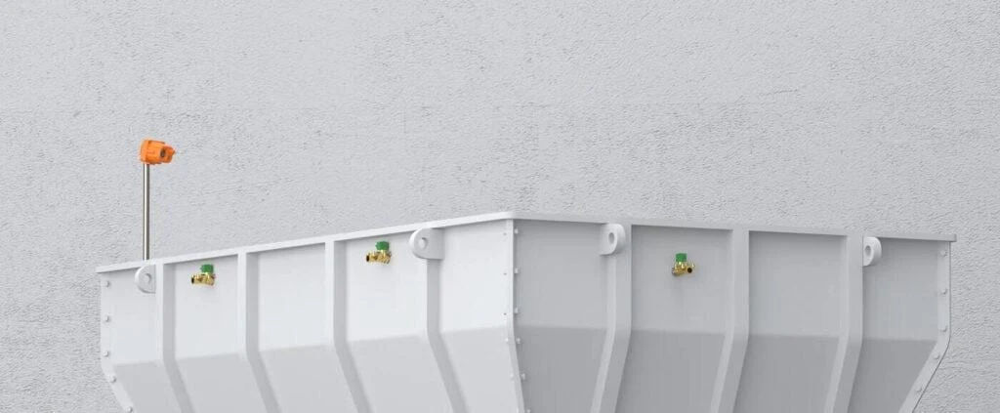
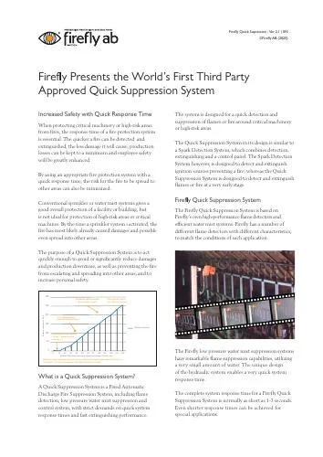

Detect
Firefly flame detectors identify flames in the protected area.

Firefly Quick Suppression brings flame detection, low-pressure water mist and control together. It is designed to detect and suppress flames at an early stage around critical machinery and high-risk areas.
Firefly flame detectors identify flames in the protected area.
The control system activates the water mist suppression arrangement.
Water mist is applied to the protected machinery or risk area.
Applications include shredders, conveyors and loading or unloading areas. Detector selection and suppression design are matched to the installation.
Discuss your installationDesigned as part of a
connected Firefly installation.
Product literature and films.
All in one place.


Showing 2 materials